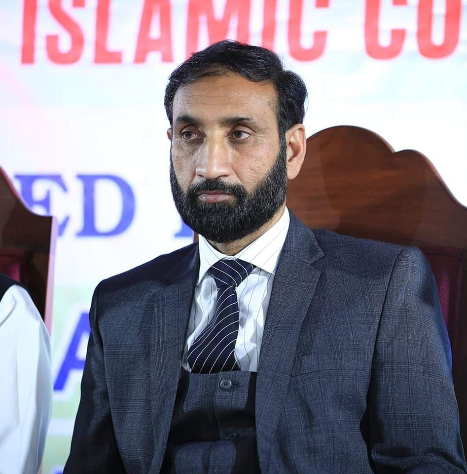

Prof. Dr. Shahbaz Khan ManjDirector GeneralProf. Dr. Shahbaz Khan Manj is a distinguished academic, Theological Theorist and senior university administrator with extensive experience in teaching, research supervision, academic leadership, and institutional development. He is serving as Founding Chairperson and Professor of the Department of Islamic Studies at the University of Education, Lahore. He has played a significant role in the development of Islamic Studies programs, research culture, academic publications, and scholarly networking at national and international levels.
He has authored numerous research papers and books and has supervised a large number of MPhil and PhD scholars. His areas of academic interest include Qur'anic Studies, Hadith, Islamic Law, Islamic Thought, Muslim Civilization, interfaith harmony, contemporary religious issues, peace studies, and socio-legal debates in the Muslim world. He is also associated with various academic journals and research institutions, contributing as an editor, reviewer, supervisor, and academic advisor.
Prof. Dr. Shahbaz Khan Manj is known for his active role in organizing national and international conferences, promoting research collaboration, and representing Islamic scholarship in academic and interfaith forums. His scholarly work reflects a strong commitment to Islamic intellectual tradition, contemporary relevance, academic excellence, and the promotion of peace, dialogue, and understanding among diverse communities.
Email: info@aqiri.org